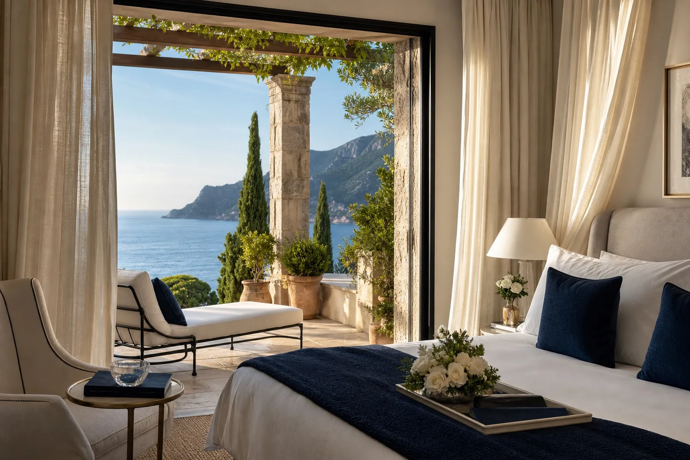

Journal
The travel
notebook.
Small observations, trip notes and things worth remembering before you go.
Coastal notes
A coast day, left open
One town, one lunch, and room for what catches your eye.
Read note ↗
Time together
Breakfast, at everyone’s pace
A few notes on sharing a house without sharing a timetable.
Read note ↗A note for the journey
Leave a little room for arrival
The first evening can be the gentlest part of the journey.
Read note ↗
Winter notebook
The one thing you would love to do
A small note to keep before the next winter escape.
Read note ↗